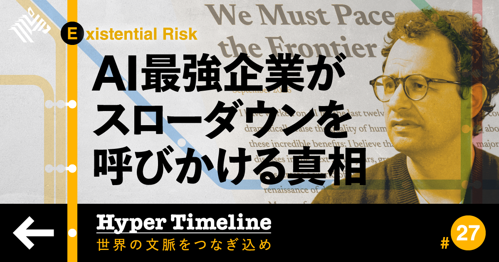

01
【大騒動】AI危険説で「儲かる人たち」がいた
発行日時：2026年9月18日 05:30 JST ・ NewsPicks編集部

あなたに関係ありそうな理由
AIの強い警告を、技術的な危険だけでなく、開示・規制・競争・資金調達の設計として読み分ける手掛かりになるためです。
概要
記事は、Anthropicのダリオ・アモデイCEOが約4,000語の文章で、AIが人間の監督をほとんど必要とせずに仕事を進める段階へ近づく危険を訴えたことを起点に、AI安全をめぐる発言がなぜ一斉に強まったのかを追う。アモデイ氏は、早ければ六〜十二カ月で危険な能力が表れる可能性にも触れ、開発速度を落とす必要を主張した。OpenAIのサム・アルトマン氏やイーロン・マスク氏も安全性への懸念を語り、GoogleやMicrosoftを含む大手の姿勢が注目を集める。一方、記事は警告をそのまま技術的な予測として受け取らない。Anthropicには巨額の資金調達や上場観測があり、安全を重視する姿勢が投資家への説明や将来の損失に備える材料になる可能性がある。また、規制を求めることは、資本や計算資源を持つ企業には対応可能でも、小規模な開発者やオープンなモデルには参入障壁になり得る。中国との競争や外交を意識した駆け引きも、開発を止めにくくする背景として扱われる。記事中では、自己改善するAIを心配して退職した人物の発言や、エージェントの安全性をめぐる事例も紹介され、能力向上と統制の距離が急に縮むことへの不安が具体化されている。表示コメントでは、安全論を企業の演出とみる意見と、競争があっても検証を後回しにできないという意見が並んだ。重要なのは、どちらかの物語をすぐ信じることではない。企業が能力評価、事故、第三者の監査、計算資源の使い方をどこまで開示するのかを確かめ、警告の発信者が得る利益と社会が負うリスクを分けて見ることだ。AIを仕事へ入れる側にとっても、便利さだけでなく、権限、データ、異常時の停止方法を設計して初めて安全性の議論を実務へ戻せる。問題が起きた時に誰が処理を止め、利用者への説明をどこに残すかを決めずに自律的な処理を増やせば、監督責任は曖昧になる。安全性は開発会社の広報文だけで完結せず、使う側の記録と点検でも試される。導入前に、権限の範囲と点検頻度を文書で残すことが、後から検証する土台になる。短期の効率と長期の検証負担を同じ表で見積もり、強い言葉より検証可能な根拠と運用条件を追いたい記事である。
仕事や会話で使える一言
「AI安全の発言は、予測の中身と、誰が何を開示するかを分けて読みたいですね。」
NewsPicks原文を読む
02
【新常識】コンテンツビジネスを「一発勝負」にしない経営
発行日時：2026年9月18日 05:30 JST ・ NewsPicks編集部
あなたに関係ありそうな理由
ヒット作を当てる才能だけでなく、失敗を前提に次の企画へ戻れる収益と流通の仕組みを考えられるためです。
概要
記事は、ドラゴンボールのように長期で大きな価値を生むIPが注目される一方、コンテンツ事業を単発の大ヒットに賭けないためには何が要るかを、Mintoの事例から描く。ドラゴンボールは四十年以上を経ても商品化や映像で展開され、累計市場規模は民間推計で約240億ドルと紹介される。しかし、長く残る作品があることと、新しいIPを再現性高く生み出せることは別の問題だ。Mintoは「うさぎゅーん！」などのスタンプを起点に、Facebook MessengerやWeChatのようなメッセンジャーを通じて海外へ広げ、ライセンス供与で収益を得てきた。言語の壁が比較的低いスタンプは、作品を知ってもらう入口になるが、地域ごとの文化や流通事業者との関係を積み上げなければ、継続的な事業にはならない。記事では東南アジアを、短期の数字だけでは測れない成長市場として位置づける。もう一つの柱は資金の回し方だ。コンテンツは八〜九割が当たらないという前提で、Mintoは売上の大部分を外部企業とのBtoB事業で確保し、自社IPへの投資を続ける。安定収益があるからこそ、当たらなかった企画を抱え込まず、次の試作を行える。表示コメントでも、成功した一作を囲い込むより、何度も挑戦できる組織と資金の構造こそ重要だという見方が出た。作品の話として読むだけでなく、どの企業にも通じるポートフォリオの話でもある。売上の予測しやすい事業と、不確実だが将来の資産になる挑戦をどう組み合わせるか。ヒットを見た時には人気の大きさだけでなく、誰が権利を持ち、どの地域でどう流通し、次の企画を支える原資があるのかを確認したい。海外展開でライセンス収入が伸びるほど、原作者・制作会社・販売先の権利や分配を透明にしておかなければ、次の展開で信頼を失う。小さな反応をどこで拾い、次の投資額をどう決めるかを、数字と対話の両方で点検したい。現地の反応から表現や商品化の方法を小さく直し続けることも、長く残るIPには欠かせない。運用の歪みを早く見つける目線も必要になる。偶然の成功を一回で終わらせないには、創作・営業・海外展開を別々にせず、失敗しても戻れる仕組みとして結ぶ必要がある。
仕事や会話で使える一言
「ヒットを再現するより、外れても次の企画へ戻れる原資を持つ方が経営の強さになりますね。」
NewsPicks原文を読む
03
【29歳の挑戦】元ボスコンの私が「福岡市長選」に出る理由
発行日時：2026年9月18日 17:00 JST ・ NewsPicks編集部
あなたに関係ありそうな理由
世代交代という見出しだけでなく、候補者の経歴、行政の実行力、地域との信頼をどのように比べるか考える材料になるためです。
概要
記事は、福岡市の高島宗一郎市長が四期十六年で退任を表明した後の市長選に、二十九歳の佐々木彩乃氏が立候補する理由を聞く。投開票は十一月十五日で、長く続いた市政の次を誰が担うのかが焦点になる。佐々木氏は九州大学で学び、中国との関わりを深めるため香港・清華大学のプログラムにも参加し、その後ボストン コンサルティング グループで約三年半働いた。本人は、若い世代が将来を良くできると感じにくいという調査結果に問題意識を持ち、自分の進路の選択肢を狭めずに済む街にしたいと語る。前市長を支持してきた一方で、後継がほぼ無投票で決まるような状況ではなく、考えの異なる選択肢が示される選挙にしたいというのが出馬の直接の動機だ。記事は、海外での学びを単なる経歴として置かず、米中関係の変化と福岡・日本の位置を考えるための経験として紹介する。しかし、若さや有名な勤務先だけで行政を任せられるかは決まらない。市長には、予算を組み、職員や議会、地域団体、企業と合意をつくり、人口・産業・子育て・交通といった課題を同時に扱う力が要る。表示コメントでも、若い当事者が名乗る意義を評価する声と、地域のネットワークや実務経験を重視する声が並んだ。候補者を比べる時は、年齢やキャリアの新しさだけで結論を急がず、何を優先するのか、財源をどう考えるのか、実行を支えるチームをどうつくるのかを具体的に聞きたい。都市が成長を続けるか、暮らしの手触りをどう保つかは、派手な構想だけでなく、途中経過の公開や失敗した施策の見直し方にも表れる。選挙後に公約がどう予算と工程へ落ち、誰が責任を持つかを追うことで、候補者への共感と政策判断を混同せずに済む。行政は一人の発信だけでは動かず、自治会、議会、職員、地元企業の協力を得ながら異なる利害を調整する。施策の対象と期限、予算の見直し条件まで示されれば、支持の理由をより具体的に判断できる。投票前には、対立する候補にも同じ質問を置き、答えの差を比べることが有権者にできる確認になる。市民が途中経過を読める場を持つことも重要だ。この記事は、若い候補の挑戦を追いながら、有権者が「期待」と「実行可能性」を同時に確かめる必要を示している。
仕事や会話で使える一言
「候補者の経歴より、何を優先し、誰と実行し、途中でどう検証するかを比べたいですね。」
NewsPicks原文を読む
04
日銀が追加利上げ、政策金利1.25％に 6月会合以来3カ月ぶり
発行日時：2026年9月18日 11:56 JST ・ 毎日新聞
あなたに関係ありそうな理由
政策金利の数字を、住宅ローン・企業融資・預金・円相場へ別々に届く変化として捉え直せるためです。
概要
記事は、日銀が政策金利を一・二五％へ引き上げたことを伝える。六月会合以来三カ月ぶりで、マイナス金利を解除して以降では最も速い間隔の利上げとなり、金利水準は一九九五年四月以来、およそ三十一年半ぶりの高さになった。金利を上げれば住宅ローンや企業の借入コストが上がり得る一方、預金金利が改善する面もあるため、同じ決定でも家計や企業への届き方は一様ではない。記事は日銀が見込む中立金利を一・一〜二・五％の範囲として示し、今回の水準はその下限付近に入ったことを説明する。次にどの速さで動くかは、物価と賃金だけでなく、原油価格、円安、AI需要の強まりといった要素にも左右される。植田和男総裁は会見で、原油が一時一バレル百ドル近辺まで上がったことや、円安が物価へ与える影響に言及した。企業物価の上昇率は前年比七％程度が三カ月続いたとされ、輸入コストの上昇をどう国内の物価へ見込むかが難しい局面になる。表示コメントでは、二十五ベーシスポイントの決定自体は織り込み済みという市場の見方、利上げ後も円安が進む可能性、住宅・不動産市場への影響、二人の反対票をどう読むかが論点になった。金融政策を見る時は「上げたか、据え置いたか」だけでは足りない。変動金利の借入がいつ見直されるか、預金金利が実際にどれほど変わるか、企業が投資判断をどこで抑えるかを分けて確認する必要がある。市場が予想を外した場合には円相場や長期金利も短期間に動き得るため、返済額や表面的な預金利率だけでなく、固定と変動の比率、資金を必要とする時期、収入が変動した時の余力まで見ておくと判断が安定する。利上げの効果が家計へ届く時期と、企業の投資計画が変わる時期は異なるため、短い値動きと中期の資金繰りを混同しないことも重要だ。今回の利上げが長期金利や債券価格へどう受け止められるかは、日銀だけでなく海外金利と国債発行の見通しも重なる。金利が上がる局面では、預金・債券・借入を別の箱に入れて考えるのでなく、自分や組織の資産と負債の両方へどの順番で影響が来るのかを並べたい。次の会合では、物価見通しと金利の道筋がどこまで具体的に説明されるかが重要になる。焦点を絞りたい。
仕事や会話で使える一言
「一・二五％という数字より、借入・預金・為替へいつどう届くかを分けて見たいですね。」
NewsPicks原文を読む
05
経営「AIでラクして早く帰って」→社員「帰らない」 工数最大9割減のDeNAも悩むAI効率化の壁
発行日時：2026年9月18日 09:00 JST ・ ITmedia NEWS
あなたに関係ありそうな理由
AIの削減率だけで成果を判断せず、余った時間を誰がどの仕事へ配分し、評価をどう変えるかまで考えられるためです。
概要
記事は、AIで一つの業務を短くしても、働く時間全体が短くなるとは限らないという現場の壁を扱う。匿名の投稿では、八時間かかっていた作業をAIで四時間にしても、空いた四時間に別の仕事が入るため早く帰れないと語られる。パーソル総合研究所の調査では、AIを使う業務は平均で週二十六・四分、十六・七％短くなったが、全体の労働時間が減った人は二五・四％にとどまった。短縮で生まれた時間の六一・二％は仕事を続けるために使われ、従来どおりの四十時間という枠と業務量が残れば、効率化は余白ではなく追加の生産へ吸収される。DeNAは二〇二五年二月からAI活用を全社で進め、法務では最大九割、ライブ配信アプリPocochaでは六割の工数削減が見えたという。それでも、減った作業から人をどの新しい領域へ移すか、本人が望む仕事と会社が必要とする仕事をどう合わせるかは別の課題になる。記事では、AI導入を技術チームだけの仕事にせず、残す仕事とやめる仕事、余った時間の使い道、評価制度、上司の支援まで設計する必要があると指摘する。表示コメントでも、問題はAIの性能より、努力や成果をどのように評価するか、空いた時間へ仕事を詰め込まないために誰が「やめる」を決めるかだという論点が出た。効率化の数字が良くても、品質確認や顧客対応、学び直しに必要な時間まで削ると、あとで負債になる可能性がある。働き方を変える目的が曖昧なまま導入すると、早く済ませた人ほど仕事を追加され、学びや改善に時間を使った人が損をする制度になりかねない。管理職が業務の優先順位を明文化し、本人の希望も聞いて移行を支えることが重要だ。チーム単位で小さく試し、負荷と効果を同時に共有する運用が合う。導入後の数値を定期的に公開することも、現場の納得を保つ助けになる。AI導入の効果を確認するなら、削減された工数だけでなく、廃止した業務、新しく始めた業務、移った人の納得感、残った作業の品質を一緒に見るべきだ。早く帰ることを目的にするのか、同じ人数で売上を増やすのか、余白を学習や新規事業に振るのか。先に意思決定してから、時間と人の移動を設計することが、AI活用を持続させる条件になる。
仕事や会話で使える一言
「AIの削減率より、やめた仕事と新しく担う仕事をセットで決める方が大事ですね。」
NewsPicks原文を読む